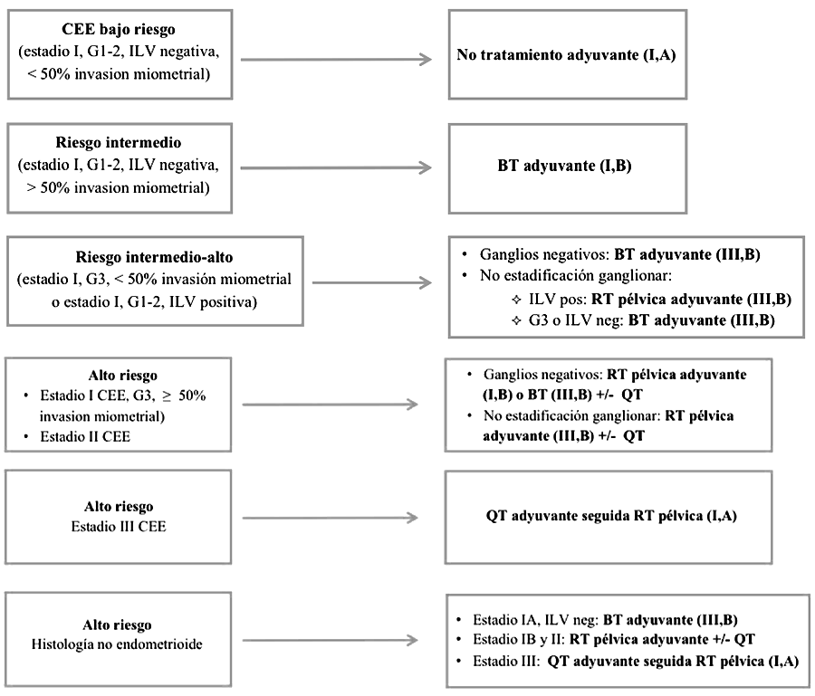

Cáncer de Endometrio

2.9 Tratamiento de estadios iniciales
Al igual que ocurre con el cáncer de cérvix, en el tratamiento del CE suelen estar involucrados varios especialistas, por lo que es importante que la decisión y secuencia terapéutica se tome en un comité de tumores.
En los estadios iniciales y localmente avanzados es habitual comenzar por el tratamiento quirúrgico, y posteriormente, según la categorización del riesgo, decidir si procede tratamiento adyuvante, ya sea con radioterapia (RT) o con quimioterapia (QT).
Cirugía
Es el tratamiento más importante en el CE, ya que dado que la mayoría de pacientes se van a diagnosticar en un estadio I y con histología favorable (endometrioide), la resección quirúrgica podría ser suficiente para conseguir la curación.
El abordaje quirúrgico estándar es la histerectomía total con salpingo-ooforectomía bilateral con la estadificación quirúrgica pertinente (ver más adelante). La cirugía del CE se puede realizar por laparotomía o por laparoscopia, siendo esta última la técnica de elección y más utilizada en la actualidad, por su menor morbilidad. Un meta-análisis publicado con los datos de los estudios que compararon la histerectomía por vía laparoscópica frente a la laparotomía ha confirmado la reducción de las tasas de complicaciones quirúrgicas y las estancias hospitalarias con la laparoscopia. La SG fue similar con ambos tratamientos. La cirugía robótica podría ser una alternativa al abordaje laparoscópico, aunque no claramente mejor y sí más cara. En los casos de graves comorbilidades se puede realizar una histerectomía por vía vaginal con salpingo-ooforectomía bilateral, después de excluir por imagen la enfermedad avanzada.
En cuanto a la extensión de la estadificación quirúrgica existen una serie de controversias, aún no resueltas por completo:
Linfadenectomía pélvica: En diferentes ensayos clínicos no se ha demostrado que la linfadenectomía pélvica tenga un valor terapéutico en los estadios iniciales, aunque en dos series retrospectivas sí se ha asociado a un incremento de la SG. En cualquier caso, es importante hacerla en los grupos de riesgo intermedio y alto para realizar una estadificación adecuada y decidir las terapias adyuvantes. Tan sólo en el grupo de bajo riesgo no sería necesaria. Siempre se deben extirpar los ganglios aumentados de tamaño pero no está bien establecido cuál debe ser el número de ganglios obtenidos (aunque suele recomendarse por encima de 10). Aunque todavía no es una opción estándar, en muchos centros se realiza de manera rutinaria la biopsia selectiva del ganglio centinela para tratar de disminuir la morbilidad, y sólo realizar linfadenectomía en los casos en los que el ganglio centinela sea positivo.
Linfadenectomía para-aórtica: Existen dudas de cuándo realizarla y con qué extensión, pero la opinión mayoritaria es que debería llevarse a cabo hasta los vasos renales. Parece bien establecida su utilidad en los casos de alto riesgo (tumores profundos, alto grado e histologías desfavorables, o cuando exista afectación de ganglios pélvicos), pero en el último consenso se consideró que en aquellos casos que tuvieran indicación de linfadenectomía, ésta debería ser siempre pélvica y para- aórtica hasta vasos renales. Esta recomendación fue establecida tras la publicación de un estudio de la Clínica Mayo en el que se observó que podía existir afectación ganglionar paraaórtica en ausencia de afectación ganglionar pélvica. De las pacientes con afectación ganglionar, el 51% tenía adenopatías pélvicas y para-aórticas positivas, el 33% sólo pélvicas, y el 16% sólo para-aórticas.
Citología peritoneal: Ya no se considera obligatorio realizarla, al no considerarse en la última actualización de la clasificación de la FIGO.
Omentectomía: Se recomienda en el carcinoma seroso, pero actualmente no se considera obligatoria en las otras histologías desfavorables (célula clara, indiferenciado y carcinosarcoma).
En pacientes menores de 45 años con tumores endometrioides en estadios IA se podría plantear una preservación ovárica. En caso de realizarla, sí sería recomendable hacer la salpinguectomía bilateral.
Importante: En pacientes inoperables por criterios médicos, la radioterapia podría ser una alternativa, aunque los resultados en términos de supervivencia no son comparables a la cirugía. En los casos en que tampoco sea posible la radioterapia, que se puede ofrecer tratamiento hormonal paliativo.
Radioterapia adyuvante
Las indicaciones de RT adyuvante, así como el tipo de irradiación recomendada (pélvica externa o braquiterapia) se establecen en función de los factores pronósticos presentes, empleándose la estratificación del riesgo antes mencionada (tabla anterior). En la tabla de más adelante se especifican las indicaciones RT según cada grupo de riesgo.
El grupo de bajo riesgo no requiere ningún tratamiento adyuvante, mientras que en el grupo de riesgo intermedio hay controversia acerca del tratamiento más adecuado. Tres ensayos clínicos randomizados (ASTEC-NCIC CTG EN.5, PORTEC-1 y GOG99) y un meta-análisis realizados en pacientes con riesgo intermedio han mostrado que la RT pélvica externa adyuvante disminuye el riesgo de recaída local (4% vs 14%), sin impacto en la SG y con un aumento de efectos adversos (principalmente toxicidad gastrointestinal). La reducción del riesgo de recaída se conseguía principalmente a expensas de reducir la recaída vaginal. Esta disminución era más relevante en las pacientes que presentan otros factores de mal pronóstico (grado 3 o ILV), a las que se catalogó como grupo de riesgo intermedio-alto. Un estudio posterior, PORTEC-2, comparó la RT externa con la braquiterapia, y mostró que la braquiterapia conseguía un excelente control vaginal con menor toxicidad que la RT externa. La RT externa + braquiterapia tampoco ha demostrado ser más eficaz que la braquiterapia sola. Por todo ello, en pacientes con riesgo intermedio el tratamiento adyuvante indicado es la braquiterapia, aunque la abstención terapéutica es otra opción considerada aceptable.
En pacientes con riesgo intermedio-alto y con estadificación quirúrgica adecuada la opción más recomendada sería la braquiterapia, aunque también se podría valorar la abstención terapéutica. En los casos que no se haya realizado una linfadenectomía, la RT está claramente indicada (y debería valorarse la RT externa, sobre todo cuando exista ILV).
Las pacientes con riesgo alto constituyen un grupo muy heterogéneo, ya que se incluyen desde estadios IB G3 hasta pacientes con estadios III, o aquellas con histologías desfavorables. La RT pélvica externa es el tratamiento estándar en este grupo de riesgo. Las pacientes con estadio II se asocian con más frecuencia a un G3 e invasión miometrial profunda. En estos casos la controversia radica en si añadir braquiterapia vaginal a la RT externa puede reducir aún más el riesgo de recaída, sin que el tratamiento combinado haya demostrado un claro beneficio en los estudios publicados hasta la fecha.
Quimioterapia adyuvante
En los tumores endometrioides de riesgo alto el papel de la QT adyuvante es controvertido, mientras que no se plantea en pacientes de menor riesgo.
Los resultados de tres ensayos clínicos randomizados no mostraron que la QT adyuvante aportara beneficio, aunque en ellos se incluyeron también pacientes de riesgo intermedio. Sin embargo, en otra publicación de un análisis combinado de los ensayos NSGO 9501/EORTC 55991 y MaNGO- ILIADE III la adición de 4 ciclos de QT basada en platino (antes o después de la RT externa) se asoció a un aumento de la SLP a 5 años (78% vs 69%, p=0.009) y a una tendencia a mejor SG (82% vs 75%, p=0.07). Por otro lado, recientemente Boer SM et al han publicado los resultados el ensayo clínico PORTEC-3, donde se incluyeron pacientes con cáncer de endometrio de riesgo alto (CE endometrioide estadio I, G3 con invasión miometrial profunda y/o ILV, CE endometrioide estadios II o III y CE seroso o célula clara estadio I, II o III), que tenía el objetivo de evaluar el papel de la RT-QT seguido de QT adyuvante frente a RT externa sola. Al añadir QT durante y después de la RT, únicamente se vió beneficio en uno de los dos objetivos primarios, la SLE, pero no en la SG a los 5 años. En el análisis de subgrupos, las pacientes en estadio III o con histología no endometrioide tuvieron un mayor beneficio en la SLE. Todavía están pendientes los resultados del estudio EORTC 55102 para terminar de establecer el papel de la quimioterapia adyuvante en tumores endometrioides en estadios inciales de alto riesgo.
Por los resultados obtenidos en ensayos de la enfermedad avanzada, que se comentarán posteriormente, actualmente se considera que la combinación de carboplatino-paclitaxel sería el esquema estándar en adyuvancia, administrándose habitualmente no más de 4 ciclos en los estadios iniciales por su indicación controvertida.
Aunque se han realizado pocos estudios específicos, en las pacientes con estadios iniciales e histologías desfavorables (seroso, células claras, indiferenciado y carcinosarcoma) se recomienda la QT adyuvante, dado su alto riesgo de diseminación. Tan solo en el estadio IA se consideraría aceptable la no prescripción de QT.
En la tabla siguiente se especifican las indicaciones QT adyuvante según cada grupo de riesgo.
Indicaciones tratamiento adyuvante para el cáncer de endometrio (adaptado de Santaballa A et al, SEOM Guidelines for endometrial cancer 2017)
BT: braquiterapia; CEE: carcinoma de endometrio endometrioide; ILV: invasión linfovascular; QT: quimioterapia; RT: radioterapia
Hormonoterapia adyuvante
La Cochrane publicó en 2011 un metaanálisis de 4.556 pacientes incluidas en siete ensayos clínicos randomizados que evaluaron la hormonoterapia con progestágenos tras la cirugía; tres de ellos incluyeron sólo estadios I, mientras que otros cuatro también estadios más avanzados. El análisis mostró que el tratamiento adyuvante con progestágenos no disminuye la mortalidad por CE, por lo que no hay evidencia para poder recomendar este tratamiento.
Terapia de preservación de fertilidad
Sólo el 4% de los CE se diagnostican en mujeres menores de 40 años, asociándose a un mejor pronóstico, y con un mayor porcentaje de tumores de bajo grado y estadios iniciales. En estas pacientes el tratamiento estándar es la cirugía previamente descrita (histerectomía + salpingo-ooforectomía, con o sin linfadenectomía), que obviamente supone una pérdida de la fertilidad.
La opción de un manejo conservador del CE para preservar la fertilidad, mediante un tratamiento con progestágenos orales, podría considerarse en pacientes con un CE endometrioide y grado 1, siempre que se haya descartado invasión miometrial clara y afectación ganglionar mediante una RM pélvica. También puede plantearse en pacientes con una hiperplasia atípica.
Importante: La estadificación del CE es quirúrgica, por lo que no se puede establecer hasta después de la cirugía reglada. El sistema de estadificación más utilizado es el de la FIGO.